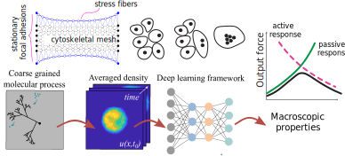
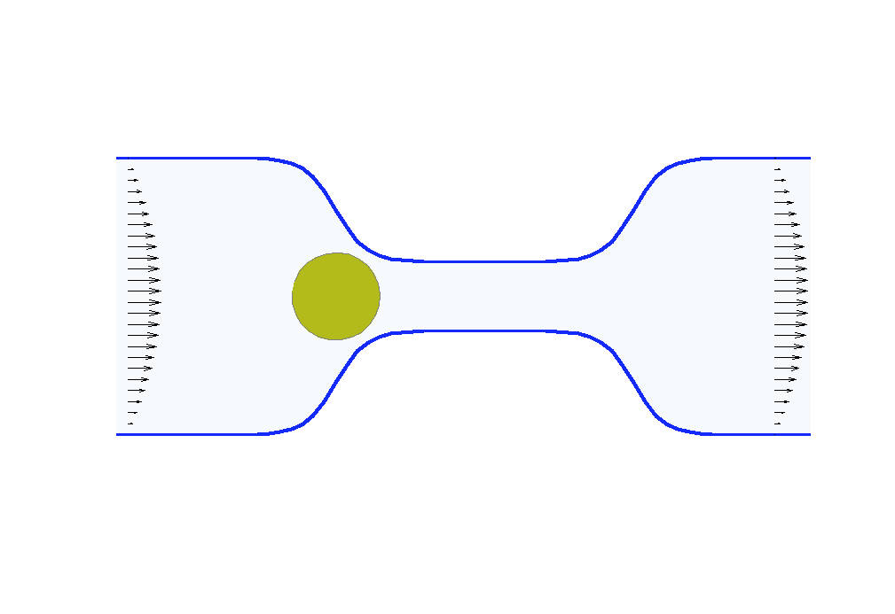
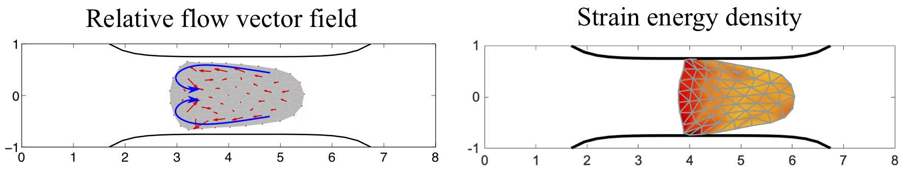

Calina Copos
Assistant Professor Biology & Mathematics
Directed cell motility accompanies us from conception to death. This process is the result of choreographed forces self-generated by the cell interior. The interior is dynamic and complicated -- it is composed of a viscous fluid (think molasses) that permeates a network of polymers with dynamics which depend on noisy chemical reactions and mechanics. Not surprisingly, cells exhibit a broad spectrum of migratory modes. Understanding cell migration is important to repair of injured tissues, tumor formation and metastasis but also emerging areas of biotechnology which focus on cell transplantation and artificial tissues.
In my research team, we construct minimal models to reveal the necessary mechanochemical components for a specific locomotion mechanism in cells. For example, we have derived differential equations for cellular mechanochemical forces inspired by the molecular actions of extension and contraction of the cell body and the protein-based adhesive links between the cell and its surrounding environment. We then apply these relations to reveal how these key microscopic processes give rise to complex behaviors at the cellular level, such as how periodic cell shape changes drive cell locomotion. Presently, we are particularly interested in emergence of organization and diverse motility modes in small cluster migration like in embryogenesis and tissue regeneration.
Collaborators: James Monaghan (NU), Alex Mogilner (NYU Courant), Laetitia Kurzawa (Universite of Grenoble, CytoMorpho Lab), Andreas Buttenschoen (UMass Amherst).

Processes at the microscale level can give rise to macroscopic phenomena. For example, the action of molecular-scale motors can move whole cells across a surface. There are a few sound approaches to study the rise of higher-order organization computationally including: coarse-grained molecular dynamics or Monte Carlo methods, heterogeneous multi-scale stochastic differential equations, or averaged partial differential equations when fluctuations are not a dominant process.
In my group, we develop microscale models and coarsening tools to learn the underlying physics-driven PDEs from averaged stochastic simulations of the assembly of intracellular polymeric structures with various topologies (rings, fan-shaped, or disks) and material properties (stress fibers).
Collaborators: Adriana Dawes (OSU), Kelsey Gasior (U Notre Dame), Brittany Bannish (U Central Oklahoma), Laetitia Kurzawa (Universite of Grenoble, CytoMorpho Lab).
|  |
|  |
Biologists and soft matter physicists are trying to reveal how the pressurized intracellular fluid is utilized by cells. For example, we think that certain cells use their intracellular fluid to generate flows that allow it to migrate in crowded environments. It has been proposed that this motion resembles ‘chimneying’, a method used by rock climbers who wedge themselves in crevices of rocks to ascent. The mechanistic details of how this achieved in a matter of seconds by a cell is yet to be revealed. In my group, we build fast computational tools to simulate Stokes fluid flows in the deforming time-evolving cell interior and physiologically realistic extracellular environments.
We are using the same mathematical framework to develop two other novel hybrid experimental-theoretical methodologies with applications to medicine: (a) determine the fluid pressure and its spatial gradients from measured traction stresses generated by cells — currently, there exists no experimental technique for measuring detailed spatial profile of intracellular pressure, (b) solve an inverse mechano-geometrical problem in order to determine the elastic modulus and relaxation timescale given the cell shape dynamics in a confined channel. I am interested in using optimization methods and uncertainty quantification to approach this inverse problem.
Collaborators: Wanda Strychalski (Case Western Reserve University).